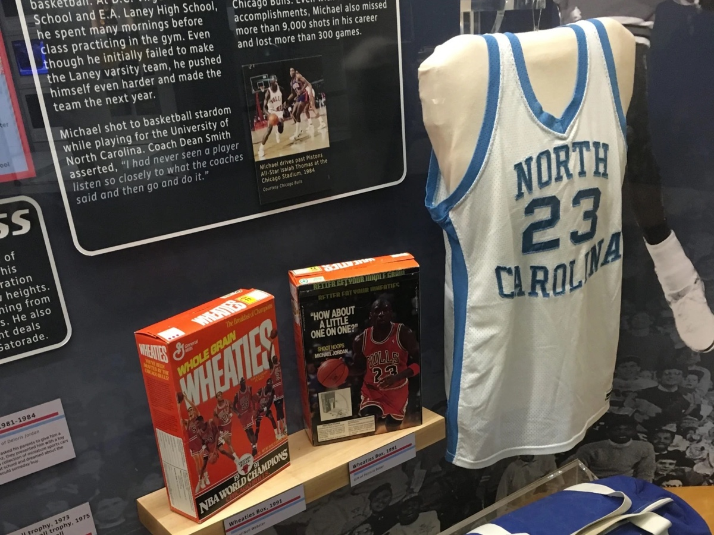
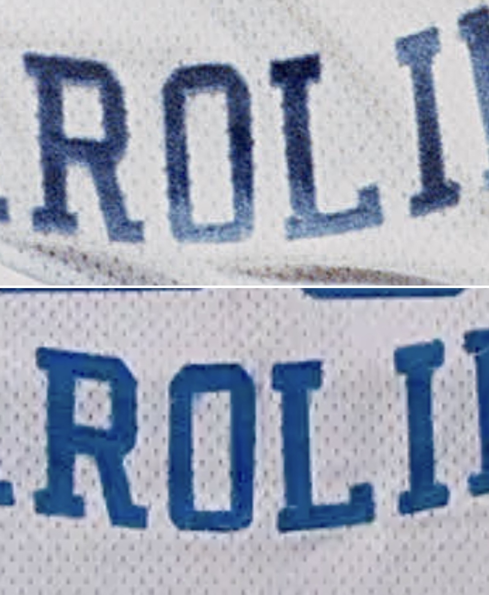
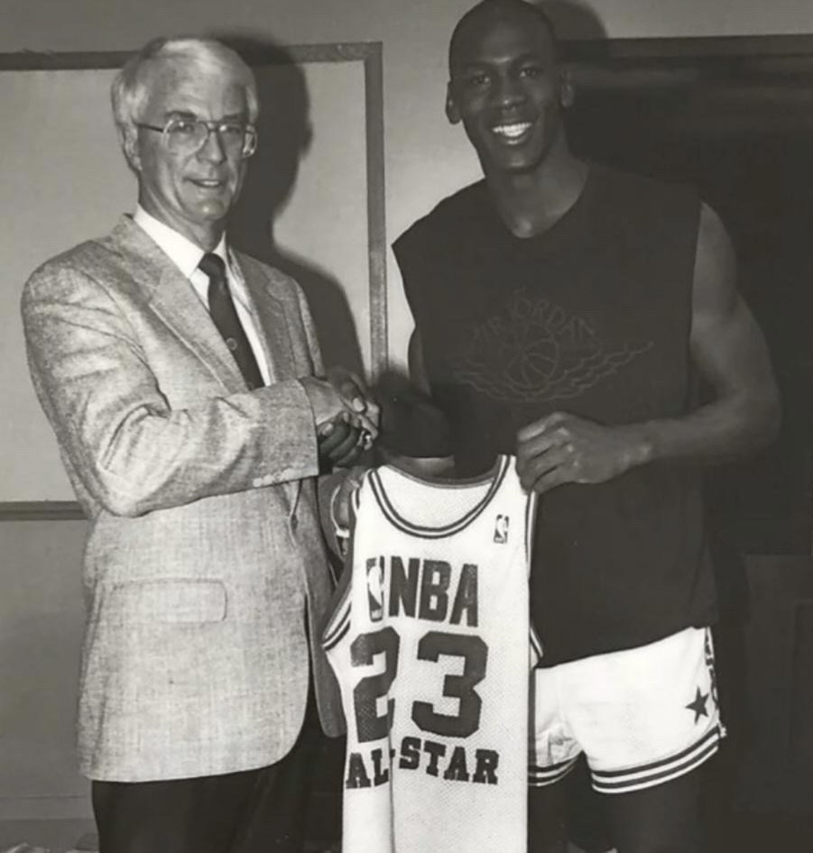

One of the most significant surviving artifacts from Michael Jordan’s career resides not in private hands, but within a museum setting.
Preserved behind glass is the jersey associated with the 1982 NCAA Championship—the moment that first introduced Jordan to a national audience. The garment remains on display today, presented simply as a North Carolina jersey from his collegiate career.

Yet its significance extends far beyond that general identification.
Through photographic comparison, the jersey can be directly tied to the championship game itself. Construction characteristics align with game imagery from the defining possession, confirming the garment as the jersey worn during the shot that brought Jordan to prominence.
What has long been presented as a representative artifact can instead be understood as the exact garment worn during one of the most consequential moments in the history of the sport.
Within the broader context of sports history, the moment stands among a small group of defining events, often compared to Babe Ruth’s called shot in its lasting significance.
This level of re-examination is not limited to a single artifact.


A Chicago Bulls uniform presented as a 1987–88 garment reveals a different kind of insight.
While no confirmed match has been established from that season, the jersey can be identified through multiple game images from the 1989–90 campaign. The garment, though tagged earlier, remained in active use beyond its production cycle.
This suggests that not all uniforms entered rotation immediately, and that garments from prior production runs could persist within team inventory, appearing in later seasons when needed.
Within the same installation, a second uniform offers a point of contrast.
A Chicago Bulls jersey attributed to the 1990–91 season can be directly aligned with game imagery from that year, confirming its use within the season for which it was produced.
Viewed together, the two garments illustrate a key distinction—between production and use—revealing how uniforms could follow different paths within the same system.


In other cases, the path of a jersey bypasses the market entirely.
A jersey worn during the 1988 NBA All-Star Game was later loaned by Jordan to the Hall of Fame, moving directly from player possession into institutional preservation.
The garment never entered the collecting space, instead becoming part of a permanent display—visible, but effectively removed from acquisition.

Visible for decades.
Only now fully understood.


The same pattern extends beyond domestic competition.
A United States Olympic jersey from the 1992 Summer Games, long preserved as part of the Dream Team narrative, can be identified through photographic comparison within documented game use.
In this context, the garment shifts from symbolic representation to a defined object within the historical record.


At the highest level of institutional preservation, the same principles remain.
A Chicago Bulls home jersey from the 1995–96 season, displayed at the Smithsonian, can be identified as having been worn across a substantial portion of the season and throughout the NBA Finals.
The garment represents not only a defining season, but a continuous record of wear across one of the most dominant campaigns in basketball history.
Conclusion
When considered together, these artifacts reveal a broader reality about the surviving body of Michael Jordan game-worn material.
A number of significant garments are already accounted for within museum collections and institutional holdings. Though publicly visible, these pieces exist outside of the active market and are unlikely to re-enter circulation.
When viewed alongside documented population data within the Jersey Index—where certain seasons are represented by as few as a single home and road uniform—the effective availability becomes increasingly limited.
Additional factors further reduce this population. Several jerseys have been segmented through the trading card industry, while others remain held within institutional or player-controlled collections.
In this context, rarity is not defined by how many jerseys exist, but by how many remain obtainable.
The result is a population that is at once visible and inaccessible—preserved in plain sight, yet largely beyond reach.
Acknowledgements: The author would like to thank the collectors and researchers who have shared information, imagery, and artifacts that helped inform the ongoing documentation of Michael Jordan’s game-worn jerseys.